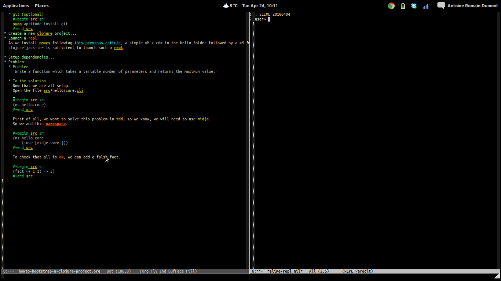

<?xml version="1.0" encoding="utf-8"?>
<!DOCTYPE html PUBLIC "-//W3C//DTD XHTML 1.0 Strict//EN"
               "http://www.w3.org/TR/xhtml1/DTD/xhtml1-strict.dtd">
<html xmlns="http://www.w3.org/1999/xhtml" lang="en" xml:lang="en">
<head>
<title>Howto bootstrap a clojure project</title>
<meta http-equiv="Content-Type" content="text/html;charset=utf-8"/>
<meta name="title" content="Howto bootstrap a clojure project"/>
<meta name="generator" content="Org-mode"/>
<meta name="generated" content="2012-04-24 12:39:56 CEST"/>
<meta name="author" content="Antoine R. Dumont"/>
<meta name="description" content=""/>
<meta name="keywords" content=""/>
<style type="text/css">
 <!--/*--><![CDATA[/*><!--*/
  html { font-family: Times, serif; font-size: 12pt; }
  .title  { text-align: center; }
  .todo   { color: red; }
  .done   { color: green; }
  .tag    { background-color: #add8e6; font-weight:normal }
  .target { }
  .timestamp { color: #bebebe; }
  .timestamp-kwd { color: #5f9ea0; }
  .right  {margin-left:auto; margin-right:0px;  text-align:right;}
  .left   {margin-left:0px;  margin-right:auto; text-align:left;}
  .center {margin-left:auto; margin-right:auto; text-align:center;}
  p.verse { margin-left: 3% }
  pre {
	border: 1pt solid #AEBDCC;
	background-color: #F3F5F7;
	padding: 5pt;
	font-family: courier, monospace;
        font-size: 90%;
        overflow:auto;
  }
  table { border-collapse: collapse; }
  td, th { vertical-align: top;  }
  th.right  { text-align:center;  }
  th.left   { text-align:center;   }
  th.center { text-align:center; }
  td.right  { text-align:right;  }
  td.left   { text-align:left;   }
  td.center { text-align:center; }
  dt { font-weight: bold; }
  div.figure { padding: 0.5em; }
  div.figure p { text-align: center; }
  div.inlinetask {
    padding:10px;
    border:2px solid gray;
    margin:10px;
    background: #ffffcc;
  }
  textarea { overflow-x: auto; }
  .linenr { font-size:smaller }
  .code-highlighted {background-color:#ffff00;}
  .org-info-js_info-navigation { border-style:none; }
  #org-info-js_console-label { font-size:10px; font-weight:bold;
                               white-space:nowrap; }
  .org-info-js_search-highlight {background-color:#ffff00; color:#000000;
                                 font-weight:bold; }
  /*]]>*/-->
</style>
<script type="text/javascript">
<!--/*--><![CDATA[/*><!--*/
 function CodeHighlightOn(elem, id)
 {
   var target = document.getElementById(id);
   if(null != target) {
     elem.cacheClassElem = elem.className;
     elem.cacheClassTarget = target.className;
     target.className = "code-highlighted";
     elem.className   = "code-highlighted";
   }
 }
 function CodeHighlightOff(elem, id)
 {
   var target = document.getElementById(id);
   if(elem.cacheClassElem)
     elem.className = elem.cacheClassElem;
   if(elem.cacheClassTarget)
     target.className = elem.cacheClassTarget;
 }
/*]]>*///-->
</script>

</head>
<body>

<div id="preamble">

</div>

<div id="content">
<h1 class="title">Howto bootstrap a clojure project</h1>

<p>In this article, we will see how to rapidly startup a clojure project.
We will also see how to use the different tools at our disposal to solve a problem.
</p>
<p>
<b>Notes</b>
</p><ul>
<li>Clojure is in no way limited to simple problems.
</li>
<li>Clojure, like any language, is limited by the users.
</li>
<li>The problem is <b>not</b> an <b>impressive one</b> as i want to focus on how to start a clojure project and how to use the tools.
</li>
</ul>


<div id="table-of-contents">
<h2>Table of Contents</h2>
<div id="text-table-of-contents">
<ul>
<li><a href="#sec-1">1 Pre-requisites</a>
<ul>
<li><a href="#sec-1-1">1.1 emacs</a></li>
<li><a href="#sec-1-2">1.2 clojure</a></li>
<li><a href="#sec-1-3">1.3 leiningen 1</a>
<ul>
<li><a href="#sec-1-3-1">1.3.1 Download the script</a></li>
<li><a href="#sec-1-3-2">1.3.2 Place it on your $PATH</a></li>
<li><a href="#sec-1-3-3">1.3.3 Make it executable</a></li>
<li><a href="#sec-1-3-4">1.3.4 Ask the version</a></li>
</ul>
</li>
<li><a href="#sec-1-4">1.4 lein-midje</a></li>
<li><a href="#sec-1-5">1.5 jdk installed (either sun or openjdk)</a>
<ul>
<li><a href="#sec-1-5-1">1.5.1 openjdk</a></li>
<li><a href="#sec-1-5-2">1.5.2 sun jdk on ubuntu 11.04</a></li>
<li><a href="#sec-1-5-3">1.5.3 sun jdk on ubuntu 11.10</a></li>
</ul>
</li>
<li><a href="#sec-1-6">1.6 git (optional)</a></li>
</ul>
</li>
<li><a href="#sec-2">2 Create a new clojure project</a></li>
<li><a href="#sec-3">3 Launch a repl</a>
<ul>
<li><a href="#sec-3-1">3.1 clojure-jack-in</a></li>
<li><a href="#sec-3-2">3.2 Basic check</a></li>
</ul>
</li>
<li><a href="#sec-4">4 Setup dependencies</a>
<ul>
<li><a href="#sec-4-1">4.1 project.clj</a></li>
<li><a href="#sec-4-2">4.2 Add dependencies</a>
<ul>
<li><a href="#sec-4-2-1">4.2.1 dev-dependencies</a></li>
<li><a href="#sec-4-2-2">4.2.2 or dependencies</a></li>
</ul>
</li>
<li><a href="#sec-4-3">4.3 Update the dependencies</a></li>
</ul>
</li>
<li><a href="#sec-5">5 Setup environment</a>
<ul>
<li><a href="#sec-5-1">5.1 Rapid check</a></li>
<li><a href="#sec-5-2">5.2 Add a midje fact</a></li>
<li><a href="#sec-5-3">5.3 Another way of checking midje facts</a>
<ul>
<li><a href="#sec-5-3-1">5.3.1 Compilation</a></li>
<li><a href="#sec-5-3-2">5.3.2 Check one fact</a></li>
</ul></li>
</ul>
</li>
<li><a href="#sec-6">6 Demo</a>
<ul>
<li><a href="#sec-6-1">6.1 Problem</a></li>
<li><a href="#sec-6-2">6.2 To the solution in TDTDD</a>
<ul>
<li><a href="#sec-6-2-1">6.2.1 First fact</a></li>
<li><a href="#sec-6-2-2">6.2.2 Compilation problem</a></li>
<li><a href="#sec-6-2-3">6.2.3 Compilation ok, fact KO</a></li>
<li><a href="#sec-6-2-4">6.2.4 Top Down Test Driven Development</a></li>
<li><a href="#sec-6-2-5">6.2.5 First implementation, compilation ok, fact ok</a></li>
<li><a href="#sec-6-2-6">6.2.6 <code>mx</code> facts</a></li>
<li><a href="#sec-6-2-7">6.2.7 Final - Integration test</a></li>
<li><a href="#sec-6-2-8">6.2.8 Code</a></li>
</ul></li>
</ul>
</li>
<li><a href="#sec-7">7 Notes</a>
<ul>
<li><a href="#sec-7-1">7.1 Around the testing</a></li>
<li><a href="#sec-7-2">7.2 Video from Brian Marick using top down tdd to solve a more complex problem</a></li>
</ul>
</li>
<li><a href="#sec-8">8 Conclusion</a></li>
</ul>
</div>
</div>

<div id="outline-container-1" class="outline-2">
<h2 id="sec-1"><span class="section-number-2">1</span> Pre-requisites</h2>
<div class="outline-text-2" id="text-1">


</div>

<div id="outline-container-1-1" class="outline-3">
<h3 id="sec-1-1"><span class="section-number-3">1.1</span> <a href="http://www.gnu.org/software/emacs/">emacs</a></h3>
<div class="outline-text-3" id="text-1-1">

<p>See this <a href="http://adumont.fr/blog/how-to-install-emacs-24/">previous post for installing it</a>
</p></div>

</div>

<div id="outline-container-1-2" class="outline-3">
<h3 id="sec-1-2"><span class="section-number-3">1.2</span> <a href="http://clojure.org/">clojure</a></h3>
<div class="outline-text-3" id="text-1-2">


<pre class="example">sudo aptitude install clojure
</pre>

</div>

</div>

<div id="outline-container-1-3" class="outline-3">
<h3 id="sec-1-3"><span class="section-number-3">1.3</span> <a href="https://github.com/technomancy/leiningen">leiningen</a> 1</h3>
<div class="outline-text-3" id="text-1-3">


</div>

<div id="outline-container-1-3-1" class="outline-4">
<h4 id="sec-1-3-1"><span class="section-number-4">1.3.1</span> Download the script</h4>
<div class="outline-text-4" id="text-1-3-1">


<pre class="example">wget https://raw.github.com/technomancy/leiningen/stable/bin/lein
</pre>

</div>

</div>

<div id="outline-container-1-3-2" class="outline-4">
<h4 id="sec-1-3-2"><span class="section-number-4">1.3.2</span> Place it on your $PATH</h4>
<div class="outline-text-4" id="text-1-3-2">

<p>I also like to use ~/bin.
</p>


<pre class="example">export PATH=~/bin/:$PATH
</pre>

</div>

</div>

<div id="outline-container-1-3-3" class="outline-4">
<h4 id="sec-1-3-3"><span class="section-number-4">1.3.3</span> Make it executable</h4>
<div class="outline-text-4" id="text-1-3-3">


<pre class="example">chmod 755 ~/bin/lein
</pre>

</div>

</div>

<div id="outline-container-1-3-4" class="outline-4">
<h4 id="sec-1-3-4"><span class="section-number-4">1.3.4</span> Ask the version</h4>
<div class="outline-text-4" id="text-1-3-4">

<p>This will download all it needs.
</p>


<pre class="example">lein version
</pre>

<p>
and finally gives you an output similar to this:
</p>


<pre class="example">tony@dagobah(0.11,) 09:56:26 ~/org (master) $ lein version
Leiningen 1.7.1 on Java 1.6.0_26 Java HotSpot(TM) Client VM
</pre>

</div>
</div>

</div>

<div id="outline-container-1-4" class="outline-3">
<h3 id="sec-1-4"><span class="section-number-3">1.4</span> <a href="https://github.com/marick/Midje/wiki/Lein-midje">lein-midje</a></h3>
<div class="outline-text-3" id="text-1-4">

<p>This is a leiningen plugin to launch unit tests for the unit test framework midje.
</p>


<pre class="example">lein plugin install lein-midje 1.0.9
</pre>


<p>
<b>Note</b>
The version [lein-midje "2.0.0-SNAPSHOT"] is leiningen 2 compatible so do not use this one.
</p></div>

</div>

<div id="outline-container-1-5" class="outline-3">
<h3 id="sec-1-5"><span class="section-number-3">1.5</span> jdk installed (either sun or openjdk)</h3>
<div class="outline-text-3" id="text-1-5">


</div>

<div id="outline-container-1-5-1" class="outline-4">
<h4 id="sec-1-5-1"><span class="section-number-4">1.5.1</span> openjdk</h4>
<div class="outline-text-4" id="text-1-5-1">


<pre class="example">sudo aptitude install openjdk
</pre>

</div>

</div>

<div id="outline-container-1-5-2" class="outline-4">
<h4 id="sec-1-5-2"><span class="section-number-4">1.5.2</span> sun jdk on ubuntu 11.04</h4>
<div class="outline-text-4" id="text-1-5-2">

<p><a href="https://github.com/ardumont/sh/blob/master/deploy-java-sun-11.04.sh">https://github.com/ardumont/sh/blob/master/deploy-java-sun-11.04.sh</a>
</p></div>

</div>

<div id="outline-container-1-5-3" class="outline-4">
<h4 id="sec-1-5-3"><span class="section-number-4">1.5.3</span> sun jdk on ubuntu 11.10</h4>
<div class="outline-text-4" id="text-1-5-3">

<p><a href="https://github.com/ardumont/sh/blob/master/deploy-java-sun-11.10.sh">https://github.com/ardumont/sh/blob/master/deploy-java-sun-11.10.sh</a>
</p></div>
</div>

</div>

<div id="outline-container-1-6" class="outline-3">
<h3 id="sec-1-6"><span class="section-number-3">1.6</span> git (optional)</h3>
<div class="outline-text-3" id="text-1-6">


<pre class="example">sudo aptitude install git
</pre>

</div>
</div>

</div>

<div id="outline-container-2" class="outline-2">
<h2 id="sec-2"><span class="section-number-2">2</span> Create a new clojure project</h2>
<div class="outline-text-2" id="text-2">


<pre class="example">lein new hello
</pre>


<p>
This will create an arborescence like this:
</p>


<pre class="example">/home/tony/repositories/test/hello/
├── .gitignore
├── project.clj
├── README
├── src
│   └── hello
│       └── core.clj
└── test
    └── hello
        └── test
            └── core.clj

5 directories, 4 files
</pre>


<p>
I usually initialize a git project to hold my modifications.
</p>


<pre class="example">git init &amp;&amp; git add . &amp;&amp; git commit -m "Bootstrap clojure project"
</pre>


</div>

</div>

<div id="outline-container-3" class="outline-2">
<h2 id="sec-3"><span class="section-number-2">3</span> Launch a <a href="http://en.wikipedia.org/wiki/Read–eval–print_loop">repl</a></h2>
<div class="outline-text-2" id="text-3">


</div>

<div id="outline-container-3-1" class="outline-3">
<h3 id="sec-3-1"><span class="section-number-3">3.1</span> <a href="https://github.com/technomancy/swank-clojure">clojure-jack-in</a></h3>
<div class="outline-text-3" id="text-3-1">

<p>As we <a href="http://adumont.fr/blog/how-to-install-emacs-24/">already installed emacs</a>, we can launch the repl by doing simply:
</p><ul>
<li><code>M-x cd</code> to change the current folder emacs runs into the <code>hello folder</code> (the one containing the <code>project.clj</code> file)
</li>
<li><code>M-x clojure-jack-in</code> to launch the repl.
</li>
</ul>


<p>
A new <a href="http://www.cs.utah.edu/dept/old/texinfo/emacs18/emacs_20.html">buffer</a> must have launched itself (may take some time the first time)

</p></div>

</div>

<div id="outline-container-3-2" class="outline-3">
<h3 id="sec-3-2"><span class="section-number-3">3.2</span> Basic check</h3>
<div class="outline-text-3" id="text-3-2">


<p>
Launch some basic operations and hit enter to check that the repl reacts:
</p>


<pre class="example">; SLIME 20100404
user&gt; (+ 1 1)
2
user&gt; (reduce + [ 1 2 3 4])
10
user&gt; 
</pre>


</div>
</div>

</div>

<div id="outline-container-4" class="outline-2">
<h2 id="sec-4"><span class="section-number-2">4</span> Setup dependencies</h2>
<div class="outline-text-2" id="text-4">


</div>

<div id="outline-container-4-1" class="outline-3">
<h3 id="sec-4-1"><span class="section-number-3">4.1</span> project.clj</h3>
<div class="outline-text-3" id="text-4-1">

<p>The <code>project.clj</code> file is the <a href="https://github.com/technomancy/leiningen">leiningen</a> file holding the metadata of your project.
This is this file that you want to edit to add dependencies or dev-dependencies.
</p>
<p>
By default, here is the content:
</p>


<pre class="example">(defproject hello "1.0.0-SNAPSHOT"
  :description "FIXME: write description"
  :dependencies [[org.clojure/clojure "1.3.0"]])
</pre>


<p>
This describes that the project :
</p><ul>
<li>if packaged, the version will be 1.0.0-SNAPSHOT
</li>
<li>a simple description to update
</li>
<li>holds only one runtime dependencies, clojure in its version 1.3.0 (currently, the 1.4.0
</li>
</ul>

<p>has been released).
</p>
<p>
<b>Note</b>
For those from the java world, you can see it as the equivalent of the maven pom.xml with less verbosity!
</p></div>

</div>

<div id="outline-container-4-2" class="outline-3">
<h3 id="sec-4-2"><span class="section-number-3">4.2</span> Add dependencies</h3>
<div class="outline-text-3" id="text-4-2">

<p>As i'm a <a href="http://en.wikipedia.org/wiki/Test-driven_development">tdd</a> fanboy, i like to add <a href="https://github.com/marick/Midje">midje</a>, an excellent unit test framework for clojure.
</p>

</div>

<div id="outline-container-4-2-1" class="outline-4">
<h4 id="sec-4-2-1"><span class="section-number-4">4.2.1</span> dev-dependencies</h4>
<div class="outline-text-4" id="text-4-2-1">

<p>To add some dev-dependencies, add the :dev-dependencies in this file, like this:
</p>


<pre class="example">(defproject hello "1.0.0-SNAPSHOT"
  :description "A simple hello world from clojure"
  :dependencies [[org.clojure/clojure "1.3.0"]]
  :dev-dependencies [[midje "1.3.1"]])
</pre>


</div>

</div>

<div id="outline-container-4-2-2" class="outline-4">
<h4 id="sec-4-2-2"><span class="section-number-4">4.2.2</span> or dependencies</h4>
<div class="outline-text-4" id="text-4-2-2">


<p>
As midje is a unit test framework, this must be a dev-dependencies (to avoid having it in the jar at runtime).
</p>
<p>
But, considering that clojure is extremely expressive, i'd rather make midje a runtime dependencies so that my facts (unit
test in midje) stays with the code they tests.
Thus, my facts are another level of documentation..
If you're like me, then change the previous block into this
</p>


<pre class="example">(defproject hello "1.0.0-SNAPSHOT"
  :description "A simple hello world from clojure"
  :dependencies [[org.clojure/clojure "1.3.0"]
                 [midje "1.3.1"]])
</pre>


<p>
Another plus side to this is, we do not have any problems concerning the visibility of the function.
A function private is still testable.
</p></div>
</div>

</div>

<div id="outline-container-4-3" class="outline-3">
<h3 id="sec-4-3"><span class="section-number-3">4.3</span> Update the dependencies</h3>
<div class="outline-text-3" id="text-4-3">

<p>Now that we modify this file, we need to update the jars locally.
To do this, we will tell leiningen "go fetch my dependencies" with the <code>deps</code> commands.
</p>


<pre class="example">lein deps
</pre>


<p>
This will use the <a href="http://clojars.org/">clojars</a> and/or <a href="http://maven.apache.org/">maven</a> artifacts around the world to satisfy my demands.
</p>
</div>
</div>

</div>

<div id="outline-container-5" class="outline-2">
<h2 id="sec-5"><span class="section-number-2">5</span> Setup environment</h2>
<div class="outline-text-2" id="text-5">


</div>

<div id="outline-container-5-1" class="outline-3">
<h3 id="sec-5-1"><span class="section-number-3">5.1</span> Rapid check</h3>
<div class="outline-text-3" id="text-5-1">

<p>Launch the unit tests, you should have this
</p>


<pre class="example">tony@dagobah(0.08,) 09:31:10 ~/repositories/test/hello $ lein midje
&gt;&gt;&gt; Output from clojure.test tests:

FAIL in (replace-me) (core.clj:6)
No tests have been written.
expected: false
  actual: false

&gt;&gt;&gt; clojure.test summary:
Ran 1 tests containing 1 assertions.
1 failures, 0 errors.
&gt;&gt;&gt; Midje summary:
All claimed facts (0) have been confirmed. 
</pre>


<p>
This is a success.
</p>
<p>
It's normal that the test fail as there is a default false claim in the file <code>test/hello/test/core.clj</code>
</p>


<pre class="example">(ns hello.test.core
  (:use [hello.core])
  (:use [clojure.test]))

(deftest replace-me ;; FIXME: write
  (is false "No tests have been written."))
</pre>


<p>
You can remove this file as we will write our tests in the source file directly.
</p>
</div>

</div>

<div id="outline-container-5-2" class="outline-3">
<h3 id="sec-5-2"><span class="section-number-3">5.2</span> Add a midje fact</h3>
<div class="outline-text-3" id="text-5-2">

<p>Open the file src/hello/core.clj
</p>


<pre class="example">(ns hello.core)
</pre>


<p>
First of all, we want to solve this problem in tdd, so we know, we will need to use midje.
So we add this namespace.
</p>


<pre class="example">(ns hello.core
    (:use [midje.sweet]))
</pre>


<p>
To check that all is ok, we can add a false fact.
</p>


<pre class="example">(fact (+ 1 1) =&gt; 3)
</pre>


<p>
<b>Note</b>: We can read this fact like this: "This is a fact that (+ 1 1) gives 3"
We all know it's false but bare with me.
</p>
<p>
In the terminal, launch <code>lein midje</code> again
</p>


<pre class="example">tony@dagobah(0.14,) 10:21:37 ~/repositories/test/hello (master) $ lein midje

FAIL at (core.clj:4)
    Expected: 3
      Actual: 2
FAILURE: 1 fact was not confirmed. 
</pre>


<p>
Ok, the test is failing but it's ok, that's what we want.
</p>
<p>
Now, the ultimate test, check the output when the test is ok.
</p>
<p>
For this, change the fact to the right result.
</p>


<pre class="example">(fact (+ 1 1) =&gt; 2)
</pre>

<p>
<b>Note</b> This is a fact that (+ 1 1) gives 2.
</p>
<p>
Now launch <code>lein midje</code>
</p>


<pre class="example">tony@dagobah(0.53,) 10:21:58 (1) ~/repositories/test/hello (master) $ lein midje
All claimed facts (1) have been confirmed. 
</pre>


</div>

</div>

<div id="outline-container-5-3" class="outline-3">
<h3 id="sec-5-3"><span class="section-number-3">5.3</span> Another way of checking midje facts</h3>
<div class="outline-text-3" id="text-5-3">


</div>

<div id="outline-container-5-3-1" class="outline-4">
<h4 id="sec-5-3-1"><span class="section-number-4">5.3.1</span> Compilation</h4>
<div class="outline-text-4" id="text-5-3-1">

<p>When in the <code>core.clj</code> buffer, <code>C-c C-k</code> launches the compilation of all the clj file.
The output of this compilation appears in the repl.
</p>
<p>
When in error:
</p>


<pre class="example">; SLIME 20100404
FAIL at (core.clj:4)
    Expected: 3
      Actual: 2

user&gt; 
</pre>


<p>
When there is no error, nothing appears (except if there are prints in your code).
</p></div>

</div>

<div id="outline-container-5-3-2" class="outline-4">
<h4 id="sec-5-3-2"><span class="section-number-4">5.3.2</span> Check one fact</h4>
<div class="outline-text-4" id="text-5-3-2">

<p>When in the <code>core.clj</code> buffer, =C-c ,= launch the evaluation of the fact.
If the fact is true, there will be a quotation just before the fact.
</p>


<pre class="example">;.;. Any intelligent fool can make things bigger, more complex, and more violent. It takes a touch of genius -- and a lot of
;.;. courage -- to move in the opposite direction. -- Schumacher
(fact (+ 1 1) =&gt; 2)
</pre>


<p>
Else, there will be a summary of the error
</p>


<pre class="example">;.;. FAIL at (NO_SOURCE_FILE:1)
;.;.     Expected: 3
;.;.       Actual: 2
(fact (+ 1 1) =&gt; 3)

</pre>

</div>
</div>
</div>

</div>

<div id="outline-container-6" class="outline-2">
<h2 id="sec-6"><span class="section-number-2">6</span> Demo</h2>
<div class="outline-text-2" id="text-6">

<p>Now to prove that we have all that we need, we will solve a little problem.
</p>
</div>

<div id="outline-container-6-1" class="outline-3">
<h3 id="sec-6-1"><span class="section-number-3">6.1</span> Problem</h3>
<div class="outline-text-3" id="text-6-1">

<p><code>Write a function which takes a variable number of parameters and returns the maximum value.</code>
</p>
<p>
<b>Note</b> There is already a <code>max</code> function but we will forbid ourselves to use it.
</p>
</div>

</div>

<div id="outline-container-6-2" class="outline-3">
<h3 id="sec-6-2"><span class="section-number-3">6.2</span> To the solution in TDTDD</h3>
<div class="outline-text-3" id="text-6-2">


</div>

<div id="outline-container-6-2-1" class="outline-4">
<h4 id="sec-6-2-1"><span class="section-number-4">6.2.1</span> First fact</h4>
<div class="outline-text-4" id="text-6-2-1">

<p>The environment is now ready.
</p>
<p>
Let's design some facts to help us progress.
</p>


<pre class="example">(fact (our-max 1 8 30) =&gt; 30)
</pre>


</div>

</div>

<div id="outline-container-6-2-2" class="outline-4">
<h4 id="sec-6-2-2"><span class="section-number-4">6.2.2</span> Compilation problem</h4>
<div class="outline-text-4" id="text-6-2-2">

<p>Compilation : <code>C-c C-k</code>
</p>
<p>
Here we will have a compilation problem as there is no function <code>our-max</code>
</p>
<p>
So add this before the fact:
</p>


<pre class="example">(defn our-max "Given an infinite list of int parameters, compute the max of all the input integers."
  [&amp; l])

(fact (our-max 1 8 30) =&gt; 30)
</pre>


<p>
<b>Explanations</b>
The declaration of the function:
</p><ul>
<li>is declared with <code>defn</code>
</li>
<li>followed by the name of the function we want, here <code>our-max</code>
</li>
<li>then a doc-string to explicit what the function does
</li>
<li>the vector of arguments (in square-brackets as all the vectors). The <code>&amp; l</code> means that the arguments is an indefinite
  size of parameters, that's exactly what we want!
</li>
<li>and at last the body of the function (the implementation), here we did nothing.
</li>
</ul>


</div>

</div>

<div id="outline-container-6-2-3" class="outline-4">
<h4 id="sec-6-2-3"><span class="section-number-4">6.2.3</span> Compilation ok, fact KO</h4>
<div class="outline-text-4" id="text-6-2-3">

<p>Launch the compilation <code>C-c C-k</code>.
Now, the compilation is ok, but we got fail facts.
That's ok because, with no implementation, we got a nil result.
<b>Note</b> In clojure, a function always return something and in case of nothing, we return nil.
</p>


<pre class="example">;.;. FAIL at (NO_SOURCE_FILE:1)
;.;.     Expected: 30
;.;.       Actual: nil
(fact (our-max 1 8 30) =&gt; 30)
</pre>


<p>
We expected 30 but got nil.
</p>
</div>

</div>

<div id="outline-container-6-2-4" class="outline-4">
<h4 id="sec-6-2-4"><span class="section-number-4">6.2.4</span> Top Down Test Driven Development</h4>
<div class="outline-text-4" id="text-6-2-4">

<p>We will try a Top Down TDD approach, i.e. we will make the function work but based on mock implementations of sub functions.
And as soon as we have the top level done, we can develop the sub function we depend on.
</p>
<p>
So here, we can change the fact to depend on a <code>mx</code> function (max) which computes the max between 2 integers.
</p>


<pre class="example">(unfinished mx)

(defn our-max "Our max implementation function"
  [&amp; l])

(fact
  (our-max 1 8 30) =&gt; 30
  (provided
    (mx 1 8) =&gt; 1
    (mx 1 30) =&gt; 30)
</pre>


<p>
<b>explanations</b>
</p><ul>
<li>The <code>(unfinished list)</code> is here to tell midje, it's ok that you do not have the implementation yet. Do not fail the
</li>
</ul>

<p>compilation for such a small delta. By the way, to add a not implemented function into the <code>unfinished list</code>, hit <code>C-c u</code>
</p><ul>
<li>This seems apparent here that we mock the call of a new function <code>mx</code> with the parameters <code>1 8</code> and with the <code>1 30</code>.
</li>
<li>I voluntarily tell midje that the max between 1 and 8 is 1 for everybody to see that this is a mock implementation
</li>
</ul>


<p>
Midje enriches its message to us:
</p>


<pre class="example">;.;. FAIL at (NO_SOURCE_FILE:1)
;.;. You claimed the following was needed, but it was never used:
;.;.     (mx 1 8)
;.;. 
;.;. FAIL at (NO_SOURCE_FILE:1)
;.;. You claimed the following was needed, but it was never used:
;.;.     (mx 1 30)
;.;. 
;.;. FAIL at (NO_SOURCE_FILE:1)
;.;.     Expected: 30
(fact
  (our-max 1 8 30) =&gt; 30
  (provided
    (mx 1 8) =&gt; 1
    (mx 1 30) =&gt; 30))
</pre>


<p>
Basically, midje warns us about the absence of our implementation.
Indeed, we did not yet complete our implementation.
</p>
</div>

</div>

<div id="outline-container-6-2-5" class="outline-4">
<h4 id="sec-6-2-5"><span class="section-number-4">6.2.5</span> First implementation, compilation ok, fact ok</h4>
<div class="outline-text-4" id="text-6-2-5">

<p>Here we go
</p>


<pre class="example">(defn our-max "Our max implementation function"
  [&amp; l]
  (reduce mx l))

;.;. Happiness comes when you believe that you have done something truly meaningful. -- Yan
(fact
  (our-max 1 8 30) =&gt; 30
  (provided
    (mx 1 8) =&gt; 1
</pre>


<p>
<b>Explanations</b>
We want to compute the max in a list of integers, so we use reduce to loop over the elements and compute the max between
1 and 8, then the result of the first iteration (here 1 according to fact) and 1 and 30 (so 30 according to the fact too).
</p>
<p>
Now the fact is ok!
We just need to implement the <code>mx</code> function.
</p>
</div>

</div>

<div id="outline-container-6-2-6" class="outline-4">
<h4 id="sec-6-2-6"><span class="section-number-4">6.2.6</span> <code>mx</code> facts</h4>
<div class="outline-text-4" id="text-6-2-6">

<p>It's just a max function, here goes the facts:
</p>


<pre class="example">(unfinished )

(defn mx "max"
  [x y]
  (if (&lt; x y) y x))

;.;. Without work, all life goes rotten. -- Camus
(fact "mx"
  (mx 1 2) =&gt; 2
  (mx 2 100) =&gt; 100)
</pre>


<p>
The arity of the function (number of arguments) needed is 2 so we have this function deal with 2 arguments.
</p></div>

</div>

<div id="outline-container-6-2-7" class="outline-4">
<h4 id="sec-6-2-7"><span class="section-number-4">6.2.7</span> Final - Integration test</h4>
<div class="outline-text-4" id="text-6-2-7">

<p>Now that we think we have everything, let's check it with a real fact.
That's a fact without mock.
</p>
<p>
For example, add this fact at the bottom of the file.
</p>


<pre class="example">;.;. Out of clutter find simplicity; from discord find harmony; in the middle of difficulty lies opportunity. -- Einstein
(fact
  (our-max 9786 4 7 87 9999 876 342 9876 999) =&gt; 9999)
</pre>


<p>
Ok, we do have everything and that worked!
</p>
</div>

</div>

<div id="outline-container-6-2-8" class="outline-4">
<h4 id="sec-6-2-8"><span class="section-number-4">6.2.8</span> Code</h4>
<div class="outline-text-4" id="text-6-2-8">

<p>Here is the final <code>core.clj</code> file.
</p>


<pre class="example">(ns hello.core
  (:use [midje.sweet]))

;; Write a function which takes a variable number of parameters and returns the maximum value.

(unfinished )

(defn mx "max"
  [x y]
  (if (&lt; x y) y x))

(fact "mx"
  (mx 1 2) =&gt; 2
  (mx 2 100) =&gt; 100)

(defn our-max "Our max implementation function"
  [&amp; l]
  (reduce mx l))

(fact "mock our-max"
  (our-max 1 8 30) =&gt; 30
  (provided
    (mx 1 8) =&gt; 1
    (mx 1 30) =&gt; 30))

;.;. Out of clutter find simplicity; from discord find harmony; in the middle of difficulty lies opportunity. -- Einstein
(fact
  (our-max 9786 4 7 87 9999 876 342 9876 999) =&gt; 9999)
</pre>

</div>
</div>
</div>

</div>

<div id="outline-container-7" class="outline-2">
<h2 id="sec-7"><span class="section-number-2">7</span> Notes</h2>
<div class="outline-text-2" id="text-7">


</div>

<div id="outline-container-7-1" class="outline-3">
<h3 id="sec-7-1"><span class="section-number-3">7.1</span> Around the testing</h3>
<div class="outline-text-3" id="text-7-1">

<p>There is an ultimate way for testing with midje that i prefer above all:
 <code>lein midje --lazytest</code> 
At the moment, it seems there is a problem with my platform around the leiningen 1.7.1 version (by downgrading it to leiningen 1.6.2, this works) that i was not yet able to solve.
</p>
<p>
This mode permits to relaunch the facts after a modification on the file system has been done.
This is quite handy to avoid the manual compilation.
The output is the same as previously described.
</p>
<p>
When this work on my machine, I use it by opening a terminal buffer (<code>M-x multi-term</code>) in emacs in which you launch the <code>lein midje --lazytest</code> command. 
</p></div>

</div>

<div id="outline-container-7-2" class="outline-3">
<h3 id="sec-7-2"><span class="section-number-3">7.2</span> Video from Brian Marick using top down tdd to solve a more complex problem</h3>
<div class="outline-text-3" id="text-7-2">

<p><a href="http://vimeo.com/19404746">http://vimeo.com/19404746</a>
</p></div>
</div>

</div>

<div id="outline-container-8" class="outline-2">
<h2 id="sec-8"><span class="section-number-2">8</span> Conclusion</h2>
<div class="outline-text-2" id="text-8">

<p>You're now able to setup a project in clojure and solve any problems you want.
</p>
<p>
In a near future, i intend to make some other blog posts to focus on:
</p><ul>
<li>continued integration with <a href="http://about.travis-ci.org/docs/user/getting-started/">travis-ci</a>
</li>
<li><a href="http://www.heroku.com/">heroku</a> for the deploying part
</li>
<li><a href="https://github.com/fogus/marginalia">marginalia</a> for the documentation generation and the <a href="#github">github</a> integration.
</li>
</ul>


</div>
</div>
</div>

<div id="postamble">
<p class="date">Date: 2012-04-24 12:39:56 CEST</p>
<p class="author">Author: Antoine R. Dumont</p>
<p class="creator">Org version 7.8.08 with Emacs version 24</p>
<a href="http://validator.w3.org/check?uri=referer">Validate XHTML 1.0</a>

</div>
</body>
</html>
